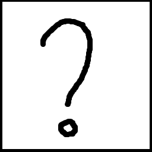

？のピリオドが句点に変化したもの。起源は不明だが外国から疑問符が伝わっていく段階でピリオドが句点として 伝わったことが原因と考えられている。また、和疑問符とも呼ばれている。
疑問図鑑 001
？のピリオドが句点に変化したもの。起源は不明だが外国から疑問符が伝わっていく段階でピリオドが句点として 伝わったことが原因と考えられている。また、和疑問符とも呼ばれている。
疑問図鑑 001のように日本に伝わっていく段階でピリオドが句点に変わった感嘆符 これは和感嘆符と呼ばれている
とても疲れた様子を表す記号 ！の形が歪み記録され、後で「とても疲れた様子を表す記号」となった。
感謝を表す記号 図鑑番号003のように！の形が歪み記録され、後で「感謝を表す記号」となった。

？と読点が合体した姿 主に文を終わらせず続けたいときなどに使われる
!と読点が合体した姿 主に文を終わらせず続けたいときなどに使われる
たくさんの？が合体した姿。主にそこに存在したかもしれないことを示す記号として使われる。 起源は不明。これは超疑問符と呼ばれている。
二重否定を表す記号
数学記号πの誤表記 また日本語では、カタカナの「ニル」に似ていることから「煮る」ことを表す記号となっている
用途不明 データによって書かれている情報に違いがあり、 俯瞰符、俯簡符、利感符など等様々な呼び方がある sns等において皮肉を表す記号として扱われるが多い
どうでもいいことを聞く際に使う記号 不完全疑問符と呼ばれている（諸説あり）
文を完全に終わらせる意味を持つ記号 使用例がほぼなく記録にも残っていない
「何かが見える」ことを表した記号